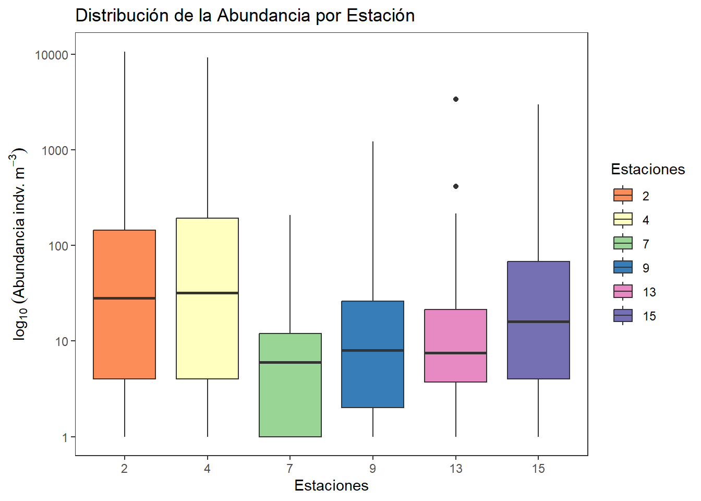
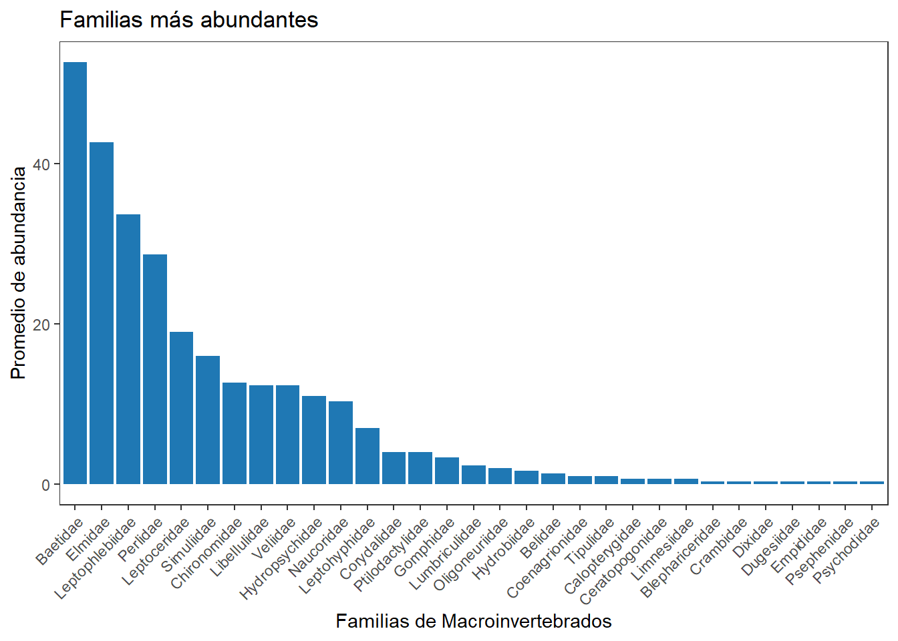

Código
# install.packages("tidyverse") # Descomentar si no está instalado
library(tidyverse)
library(readxl)
library(kableExtra)Este capítulo tiene como propósito guiarte en la exploración de técnicas fundamentales de manipulación de datos ecológicos usando el ecosistema tidyverse de R.
Trabajaremos con dos conjuntos de datos reales: el primero proviene de muestreos de plancton estuarino y el segundo de macroinvertebrados acuáticos del río Gaira. Ambos ejemplos ilustran cómo seleccionar, transformar, reorganizar y unir datos con un propósito ecológico claro.
A diferencia de un enfoque genérico de ciencia de datos, aquí no solo aprenderás a manipular tablas, sino a darles sentido ecológico: ¿qué especies dominan?, ¿cómo varía su abundancia según el ambiente?, ¿cómo se conectan los datos bióticos y abióticos?
Este capítulo sienta las bases para todo el libro, por lo que cada ejercicio ha sido diseñado para entrenarte en una forma de pensar y actuar reproducible, crítica y coherente con el análisis ambiental y ecológico moderno.
En los ecosistemas, cada organismo es un dato esperando ser comprendido. Desde el plancton flotando libre en una columna de agua, hasta los macroinvertebrados que habitan el lecho de un río, todos son piezas de un rompecabezas ecológico que cobra sentido cuando sabemos organizar y analizar la información que nos brindan.
Este capítulo introduce los fundamentos esenciales para manipular bases de datos ecológicas y ambientales mediante el lenguaje de programación R y el enfoque del paquete tidyverse. La premisa es simple pero poderosa: si aprendemos a “conversar” con los datos, también podremos escuchar lo que los ecosistemas nos están diciendo.
Trabajaremos con dos casos reales: plancton estuarino y macroinvertebrados del río Gaira, mostrando cómo seleccionar, transformar, integrar y visualizar datos ecológicos para convertirlos en conocimiento. Más allá de la técnica, el propósito es generar una mirada crítica sobre lo que nos cuentan los datos sobre la biodiversidad y el ambiente que habitamos.
Entrenar en un flujo reproducible de análisis con tidyverse, aplicable a datos ecológicos.
Se realizarán dos ejercicios (A: datos de plancton estudrino, B: datos macroinvertebrados de ríos), cuyos ejercicios tendrán la siguiente secuencia de ejercicios.
Instrucciones: Primer ejercicio en donde se contextualiza a cada procedimiento realizado, usando a la sintaxis de tidyverse.

El presente taller tiene por objeto, brindar pautas generales para el manejo y visualización de datos biológicos en el lenguaje tidyverse de R. Se realizan algunas operaciones generales usando una base de datos de plancton, que incorpora variables biológicas y ambientales. Se realizarán ejercicios con los comandos generales de tidyverse en el manejo y visualización de datos, utilizando como ejemplo la base de datos de plancton en un estuario de Colombia (biol).
La base de datos “Riqueza” tiene 498 registros y 8 columnas, incluyendo:
Station (Estación, numérica pero categórica en contexto)Size (Tamaños de malla del plancton)Layers (Capas o estratos en el gradiente de profundidad)Groups (Grupos de plancton)Abundance (Abundancia de los grupos de plancton)Temperature (Temperatura del agua)Salinity (Salinidad del agua)Density (Densidad de organismos)Para trabajar con tidyverse, primero debemos instalar y cargar los paquetes requeridos.
# install.packages("tidyverse") # Descomentar si no está instalado
library(tidyverse)
library(readxl)
library(kableExtra)Utilizamos glimpse para ver la estructura general de la base de datos y summary para obtener estadísticas descriptivas.
# Cargar datos desde Excel. Asegúrate de que 'plancton.xlsx' esté en el directorio correcto.
biol <- read_xlsx("plancton.xlsx", sheet = "Riqueza")
# `glimpse()` proporciona un resumen conciso de la estructura del dataframe,
# mostrando el tipo de cada columna y las primeras observaciones.
# `summary()` ofrece estadísticas descriptivas básicas para cada columna.
# glimpse(biol)
# summary(biol)En ecología y ciencias ambientales, el trabajo con datos suele implicar hojas de cálculo extensas, con muchas variables medidas en campo o en laboratorio. No todas esas variables serán relevantes para un análisis determinado. Algunas deben excluirse porque no aportan a la hipótesis; otras porque presentan errores sistemáticos, o simplemente porque queremos enfocarnos en un grupo funcional específico, como insectos acuáticos o copépodos.
Para esas decisiones, el paquete tidyverse ofrece dos funciones fundamentales:
select() permite elegir solo las columnas que nos interesan. Por ejemplo, si estudiamos la respuesta de Chironomidae y Baetidae a la calidad del agua, podemos quedarnos solo con esos grupos taxonómicos.filter() nos permite conservar solo las filas que cumplen ciertas condiciones. Podemos filtrar, por ejemplo, solo las estaciones aguas abajo o las muestras tomadas en época seca.Ambas funciones ayudan a que nuestro análisis sea más limpio, reproducible y enfocado en los objetivos ecológicos que nos planteamos.
# Seleccionar variables clave: `select()` permite elegir columnas específicas por su nombre.
# Aquí seleccionamos las columnas relevantes para nuestro análisis inicial.
datos_select <-
biol %>%
select(Station, Size, Layers, Abundance, Temperature, Salinity)
# Validar distribución: `head()` muestra las primeras filas del dataframe.
# `kbl()` y `kable_classic()` se usan para formatear la tabla de salida de forma legible en Quarto.
head(datos_select, 4) %>%
kbl() %>%
kable_classic(full_width = F)| Station | Size | Layers | Abundance | Temperature | Salinity |
|---|---|---|---|---|---|
| 2 | 250 μm | Surface | 0 | 30.29749 | 34.69981 |
| 2 | 250 μm | Surface | 0 | 29.40959 | 25.83323 |
| 2 | 250 μm | Surface | 0 | 29.59008 | 12.38513 |
| 2 | 250 μm | Surface | 32 | 30.29749 | 34.69981 |
# Filtrar datos por una condición específica: `filter()` selecciona filas basándose en condiciones lógicas.
# En este caso, filtramos las observaciones donde la temperatura es mayor a 28°C.
datos_filtro =
biol %>%
filter(Temperature > 28)
# Validar distribución: Mostramos las primeras filas del dataframe filtrado para verificar el resultado.
head(datos_filtro, 4) %>%
kbl() %>%
kable_classic(full_width = F)| Station | Size | Layers | Groups | Abundance | Temperature | Salinity | Density |
|---|---|---|---|---|---|---|---|
| 2 | 250 μm | Surface | Quetognatos | 0 | 30.29749 | 34.69981 | 21.417828 |
| 2 | 250 μm | Surface | Sergestidae | 0 | 29.40959 | 25.83323 | 15.085254 |
| 2 | 250 μm | Surface | Luciferidae | 0 | 29.59008 | 12.38513 | 5.729643 |
| 2 | 250 μm | Surface | Calanoida | 32 | 30.29749 | 34.69981 | 21.417828 |
Cuando filtramos por temperatura > 28°C en ecosistemas estuarinos, estamos seleccionando condiciones que pueden indicar estrés térmico para organismos sensibles a niveles altos de temperatura.
En ecología, a menudo necesitamos ir más allá de los datos crudos para entender procesos complejos. La creación de nuevas variables es como sintetizar nuevos conocimientos a partir de observaciones existentes. La función mutate de tidyverse es nuestra herramienta para esta alquimia de datos. Nos permite generar columnas derivadas, como calcular la relación entre la abundancia de plancton y la temperatura del agua. Esta nueva variable podría revelar patrones que no son evidentes al observar las variables por separado, ofreciendo una perspectiva más profunda sobre cómo los organismos responden a su entorno físico. Es una forma de enriquecer nuestros datos, transformándolos en información más significativa y relevante para las preguntas ecológicas que nos planteamos.
mutate se usa para generar nuevas variables derivadas de otras columnas.
# o modificar existentes. Aquí creamos `rel_Ab_Temp` dividiendo `Abundance` por `Temperature`.
biol_rel =
biol %>%
mutate(rel_Ab_Temp = Abundance / Temperature)
# Validar distribución: Mostramos las primeras filas del dataframe con la nueva variable.
head(biol_rel, 4) %>%
kbl() %>%
kable_classic(full_width = F)| Station | Size | Layers | Groups | Abundance | Temperature | Salinity | Density | rel_Ab_Temp |
|---|---|---|---|---|---|---|---|---|
| 2 | 250 μm | Surface | Quetognatos | 0 | 30.29749 | 34.69981 | 21.417828 | 0.000000 |
| 2 | 250 μm | Surface | Sergestidae | 0 | 29.40959 | 25.83323 | 15.085254 | 0.000000 |
| 2 | 250 μm | Surface | Luciferidae | 0 | 29.59008 | 12.38513 | 5.729643 | 0.000000 |
| 2 | 250 μm | Surface | Calanoida | 32 | 30.29749 | 34.69981 | 21.417828 | 1.056193 |
En el estudio de ecosistemas, los datos rara vez se presentan de forma aislada. La capacidad de resumir datos agrupados es fundamental para identificar patrones y tendencias en diferentes categorías, como estaciones de muestreo o tamaños de organismos. group_by y summarise de tidyverse actúan como nuestras lupas estadísticas, permitiéndonos consolidar grandes volúmenes de información en métricas clave como medias, desviaciones estándar o varianzas. Esto es vital para comparar, por ejemplo, la abundancia promedio de plancton entre distintas estaciones de un estuario o la variabilidad de la salinidad en diferentes capas de agua. Al agrupar y resumir, transformamos datos individuales en indicadores ecológicos que nos ayudan a comprender la estructura y función de los ecosistemas.
group_by permite agrupar datos según categorías para luego aplicar funciones resumen como mean(), sd(), ….
biol = read_xlsx("plancton.xlsx", sheet = "Riqueza")
# Convertir variables a factores: Es crucial para el análisis categórico.
# `as.factor()` transforma las columnas numéricas en factores para que R las trate como categorías.
biol$Station = as.factor(biol$Station)
biol$Size = as.factor(biol$Size)
# Resumen estadístico de un factor "datos_resumidos" por estaciones:
# `group_by()` agrupa los datos por una o más variables categóricas (Station, Size).
# `summarise()` calcula estadísticas resumen para cada grupo.
# `mean(Abundance, na.rm= TRUE)` calcula la media de abundancia, ignorando valores NA.
# `sd()` calcula la desviación estándar, `var()` la varianza, y `n()` el número de observaciones en cada grupo.
datos_resumidos =
biol %>%
group_by(Station, Size) %>%
summarise (datos.m = mean(Abundance, na.rm= TRUE), # Medias
datos.de = sd(Abundance, na.rm= TRUE), # Desviaciones
datos.var= var(Abundance, na.rm= TRUE), # Varianzas
datos.n = n()) # Tamaño de la muestra
# Validar distribución: Muestra las primeras filas de la tabla resumida.
head(datos_resumidos, 4) %>%
kbl() %>%
kable_classic(full_width = F)| Station | Size | datos.m | datos.de | datos.var | datos.n |
|---|---|---|---|---|---|
| 2 | 250 μm | 409.3617 | 1335.568 | 1783742 | 47 |
| 2 | 500 μm | 309.1944 | 1777.470 | 3159399 | 36 |
| 4 | 250 μm | 340.7872 | 1283.447 | 1647237 | 47 |
| 4 | 500 μm | 265.6944 | 1545.394 | 2388243 | 36 |
Agrupamos los datos por Station, Size y Layers y calculamos estadísticas descriptivas clave como la temperatura, salinidad, densidad y la abundancia total. Esto permite obtener un resumen general de las condiciones ambientales y biológicas en diferentes estaciones y capas de muestreo.
# Resumen estadístico de dos factores "datos_resumidos1":
# Agrupamos por `Station`, `Size` y `Layers` para un análisis más granular.
# `reframe()` es similar a `summarise()` pero permite crear nuevas columnas
# que pueden tener más de una fila por grupo, útil para cálculos más complejos.
# Aquí calculamos medias, desviaciones estándar, varianzas y el tamaño de la muestra para cada grupo.
# También se calcula el error estándar (`datos.ee`).
datos_resumidos1 =
biol %>%
group_by(Station, Size, Layers) %>%
reframe (datos.m = mean(Abundance, na.rm= TRUE), # Medias
datos.de = sd(Abundance, na.rm= TRUE), # Desviaciones
datos.var= var(Abundance, na.rm= TRUE), # Varianzas
datos.n = n(), # Tamaño de la muestra
datos.ee = sd(Abundance, na.rm= TRUE) / # Error estándar
sqrt(Abundance)
)
# Validar distribución: Muestra las primeras filas de la tabla resumida con dos factores.
head(datos_resumidos1, 4) %>%
kbl() %>%
kable_classic(full_width = F)| Station | Size | Layers | datos.m | datos.de | datos.var | datos.n | datos.ee |
|---|---|---|---|---|---|---|---|
| 2 | 250 μm | Depth | 584.5833 | 1782.971 | 3178986 | 24 | 891.48553 |
| 2 | 250 μm | Depth | 584.5833 | 1782.971 | 3178986 | 24 | 257.34971 |
| 2 | 250 μm | Depth | 584.5833 | 1782.971 | 3178986 | 24 | 111.43569 |
| 2 | 250 μm | Depth | 584.5833 | 1782.971 | 3178986 | 24 | 21.34721 |
Los resúmenes estadísticos nos permiten identificar tendencias de patrones espaciales, taxones dominantes y u distribución, que pueden apoyar la generación de hipótesis ecológicas profundas.
La transformación de datos es una habilidad esencial en el análisis ecológico, permitiéndonos adaptar la estructura de nuestros conjuntos de datos a las necesidades específicas de cada análisis o visualización. Las funciones pivot_longer y pivot_wider de tidyverse son herramientas poderosas que nos permiten cambiar la “forma” de nuestros datos, como si estuviéramos reorganizando una colección de especímenes para un estudio más detallado. pivot_longer es útil para convertir datos de un formato “ancho” (donde cada variable es una columna) a un formato “largo” (donde las variables se apilan en una sola columna), lo cual es ideal para la mayoría de los análisis y gráficos en ggplot2. Por el contrario, pivot_wider nos permite volver al formato ancho cuando sea necesario, por ejemplo, para preparar datos para ciertos modelos estadísticos o para una presentación específica. Estas transformaciones son clave para desbloquear el potencial analítico de nuestros datos ecológicos.
pivot_longer cambia la estructura de los datos de ancho a largo.
# Convertir columnas "Temperature, Salinity, Density" de formato ancho a largo:
# `pivot_longer()` transforma múltiples columnas en dos nuevas columnas: una para los nombres
# originales de las columnas (`names_to`) y otra para sus valores (`values_to`).
# `cols` especifica las columnas a pivotar.
datos_largo <-
biol %>%
pivot_longer(cols = c(Temperature, Salinity, Density), # Estas columnas en 1 sola
names_to = "Environmental_Variable", # Nombre de la nueva columna
values_to = "Value") # Valores de las columnas
# Validar distribución: Muestra las primeras filas del dataframe en formato largo.
head(datos_largo, 4) %>%
kbl() %>%
kable_classic(full_width = F)| Station | Size | Layers | Groups | Abundance | Environmental_Variable | Value |
|---|---|---|---|---|---|---|
| 2 | 250 μm | Surface | Quetognatos | 0 | Temperature | 30.29749 |
| 2 | 250 μm | Surface | Quetognatos | 0 | Salinity | 34.69981 |
| 2 | 250 μm | Surface | Quetognatos | 0 | Density | 21.41783 |
| 2 | 250 μm | Surface | Sergestidae | 0 | Temperature | 29.40959 |
pivot_wider regresa los datos a su formato original (ancho).
# Convertir columnas "Temperature, Salinity, Density" de formato largo a ancho:
# `pivot_wider()` es la operación inversa a `pivot_longer()`. Transforma datos de formato largo a ancho.
# `names_from` especifica la columna que contiene los nombres de las nuevas columnas.
# `values_from` especifica la columna que contiene los valores para las nuevas columnas.
# `values_fn = first` maneja posibles duplicados, tomando el primer valor encontrado.
datos_ancho <-
datos_largo %>%
pivot_wider(names_from = Environmental_Variable, # Usa esta columna para crear nuevas columnas
values_from = Value, # Valores de las nuevas columnas
values_fn = first) # Primer valor encontrado en caso de duplicados
# Validar distribución: Muestra las primeras filas del dataframe en formato ancho.
head(datos_ancho, 4) %>%
kbl() %>%
kable_classic(full_width = F)| Station | Size | Layers | Groups | Abundance | Temperature | Salinity | Density |
|---|---|---|---|---|---|---|---|
| 2 | 250 μm | Surface | Quetognatos | 0 | 30.29749 | 34.69981 | 21.417828 |
| 2 | 250 μm | Surface | Sergestidae | 0 | 29.40959 | 25.83323 | 15.085254 |
| 2 | 250 μm | Surface | Luciferidae | 0 | 29.59008 | 12.38513 | 5.729643 |
| 2 | 250 μm | Surface | Calanoida | 32 | 30.29749 | 34.69981 | 21.417828 |
La transformación de datos también es una herramienta fundamental en el análisis ecológico, especialmente cuando trabajamos con variables que no siguen distribuciones normales, que no se relacionan de forma lineal o cuando necesitamos estandarizar medidas para comparaciones válidas. En ecosistemas acuáticos, las abundancias de organismos frecuentemente muestran distribuciones asimétricas, con muchos valores bajos (o de ceros) y pocos valores altos, lo que requiere transformaciones para análisis estadísticos apropiados.
# Transformaciones usando mutate()
biol_transformado <- biol %>%
mutate(
log_abundancia = log(Abundance + 1),
sqrt_abundancia = sqrt(Abundance),
temp_estandarizada = scale(Temperature)[,1],
sal_estandarizada = scale(Salinity)[,1]
)
# Comparar transformaciones
biol_transformado %>%
select(Groups, Abundance, log_abundancia, sqrt_abundancia,
Temperature, temp_estandarizada) %>%
slice_head(n = 8) %>%
kable(caption = "Comparación de datos originales y transformados",
digits = 2)| Groups | Abundance | log_abundancia | sqrt_abundancia | Temperature | temp_estandarizada |
|---|---|---|---|---|---|
| Quetognatos | 0 | 0.00 | 0.00 | 30.30 | 1.92 |
| Sergestidae | 0 | 0.00 | 0.00 | 29.41 | -0.34 |
| Luciferidae | 0 | 0.00 | 0.00 | 29.59 | 0.12 |
| Calanoida | 32 | 3.50 | 5.66 | 30.30 | 1.92 |
| Cyclopoida | 4 | 1.61 | 2.00 | 29.41 | -0.34 |
| Harpacticoida | 2 | 1.10 | 1.41 | 29.59 | 0.12 |
| Larvas de peces | 8 | 2.20 | 2.83 | 30.30 | 1.92 |
| Huevos de peces | 28 | 3.37 | 5.29 | 29.41 | -0.34 |
La transposición de datos es una técnica que nos permite cambiar la orientación de nuestra tabla, transformando filas en columnas y viceversa. En ecología, esto es particularmente útil cuando necesitamos reorganizar la información para análisis específicos, como la creación de matrices de especies por sitio para análisis de comunidades o la preparación de datos para ciertos modelos estadísticos. Al transponer, podemos ver nuestros datos desde una nueva perspectiva, lo que a menudo revela patrones ocultos o facilita la aplicación de algoritmos que requieren una estructura de datos particular. Es como reorientar un mapa para ver un territorio desde un ángulo diferente, lo que puede destacar características que antes pasaban desapercibidas.
Los siguientes procedimientos permiten agrupar por grupos taxonómicos en filas y estaciones en columnas, para luego transporner la base y que pueda ser utilizada en diferentes procedimientos.
# Agrupar a los taxones en filas y a las estaciones en columnas:
# Este bloque de código transforma los datos para agrupar la abundancia por estación y grupo taxonómico,
# y luego pivota la tabla para que las estaciones sean columnas y los grupos filas.
# `biol[,c(1,3:5)]` selecciona las columnas necesarias: Station, Layers, Groups, Abundance.
# `group_by(Station, Groups)` agrupa los datos por estación y grupo.
# `summarise(Abundance = sum(Abundance, na.rm = TRUE))` suma la abundancia para cada grupo/estación.
# `pivot_wider()` convierte el formato de largo a ancho, con `Station` como nuevas columnas.
datos_transp <-
biol[,c(1,3:5)] %>%
group_by(Station, Groups) %>%
summarise(Abundance = sum(Abundance, na.rm = TRUE), # Suma la ab. por grupo y estación
.groups = "drop") %>%
pivot_wider(names_from = Station,
values_from = Abundance) # Convierte "Station" en nuevas columnas.
# Validar distribución: Muestra las primeras filas de la tabla transpuesta.
head(datos_transp, 4) %>%
kbl() %>%
kable_classic(full_width = F)| Groups | 2 | 4 | 7 | 9 | 13 | 15 |
|---|---|---|---|---|---|---|
| Calanoida | 13300 | 11006 | 288 | 1615 | 3911 | 3362 |
| Cyclopoida | 428 | 947 | 29 | 125 | 237 | 307 |
| Harpacticoida | 50 | 33 | 1 | 45 | 18 | 4 |
| Huevos de peces | 168 | 135 | 6 | 20 | 92 | 2 |
# ***Nota: ***Esta no es necesaria para el taller
# Transponer la anterior usando pivot_longer y pivot_wider:
# Este bloque demuestra cómo se podría transponer la tabla `datos_transp` de nuevo,
# aunque se indica que no es esencial para el taller.
# `pivot_longer(cols = -1)` convierte todas las columnas excepto la primera en filas.
# `names_to` y `values_to` definen los nombres de las nuevas columnas.
# `pivot_wider()` luego revierte la operación, usando la primera columna original para crear nuevas columnas.
datos_transp1 <-
datos_transp %>%
pivot_longer(cols = -1, # Todas las columnas excepto la primera se convierten en filas
names_to = "Station", # Los nombres de las columnas originales se almacenan aquí
values_to = "value") %>%
pivot_wider(names_from = names(datos_transp)[1], # Usa la primera columna original para crear nuevas columnas
values_from = value) # Los valores se colocan en las nuevas columnas
# Validar distribución: Muestra las primeras filas de la tabla transpuesta nuevamente.
head(datos_transp1, 4) %>%
kbl() %>%
kable_classic(full_width = F)| Station | Calanoida | Cyclopoida | Harpacticoida | Huevos de peces | Larva Nauplio | Larva Zoea | Larvas de Crustaceo | Larvas de peces | Luciferidae | Otros | Quetognatos | Sergestidae |
|---|---|---|---|---|---|---|---|---|---|---|---|---|
| 2 | 13300 | 428 | 50 | 168 | 57 | 44 | 16 | 2562 | 12411 | 30 | 86 | 1219 |
| 4 | 11006 | 947 | 33 | 135 | 282 | 406 | 0 | 98 | 11659 | 234 | 385 | 397 |
| 7 | 288 | 29 | 1 | 6 | 12 | 59 | 125 | 25 | 20 | 48 | 74 | 24 |
| 9 | 1615 | 125 | 45 | 20 | 0 | 10 | 38 | 27 | 6 | 93 | 81 | 8 |
En la investigación ecológica, es común que la información provenga de diversas fuentes: datos biológicos de una campaña de muestreo, datos fisicoquímicos de estaciones de monitoreo, o información geográfica de sistemas de información. La unión de datos es el proceso de integrar estas piezas dispares en un conjunto de datos coherente, como ensamblar las diferentes partes de un ecosistema para entender su funcionamiento integral. La función left_join de tidyverse es una herramienta invaluable para esta tarea, permitiéndonos combinar dataframes basándose en una o más columnas comunes. Esto nos facilita la exploración de relaciones complejas, por ejemplo, cómo la abundancia de una especie de plancton se relaciona con la salinidad o la temperatura del agua en una estación específica. Al unir los datos, construimos una imagen más completa y holística del sistema que estamos estudiando.
Se puede unir bases de datos con left_join. Para este ejercicio se crea la variable categórica Regiones
library(dplyr)
# Se requiere a Station como factor: Aseguramos que `Station` sea tratada como una variable categórica.
biol$Station = as.factor(biol$Station)
# Crear una base de datos adicional de regiones (nueva variable):
# Creamos un `tibble` (un tipo de dataframe de tidyverse) con estaciones y sus regiones asociadas.
Regiones =
tibble(Station = c("2", "4", "7", "9", "13", "15"),
Region = c("Norte", "Sur", "Este", "Oeste", "Central", "Otras"))
# Unir bases de datos con `left_join()`:
# `left_join()` combina dos dataframes basándose en una columna común (`Station`).
# Mantiene todas las filas del dataframe de la izquierda (`biol`) y añade las columnas coincidentes del dataframe de la derecha (`Regiones`).
biol1 =
biol %>%
left_join(Regiones, by= "Station")
# Validar distribución: Muestra las primeras filas del dataframe combinado.
head(biol1, 4) %>%
kbl() %>%
kable_classic(full_width = F)| Station | Size | Layers | Groups | Abundance | Temperature | Salinity | Density | Region |
|---|---|---|---|---|---|---|---|---|
| 2 | 250 μm | Surface | Quetognatos | 0 | 30.29749 | 34.69981 | 21.417828 | Norte |
| 2 | 250 μm | Surface | Sergestidae | 0 | 29.40959 | 25.83323 | 15.085254 | Norte |
| 2 | 250 μm | Surface | Luciferidae | 0 | 29.59008 | 12.38513 | 5.729643 | Norte |
| 2 | 250 μm | Surface | Calanoida | 32 | 30.29749 | 34.69981 | 21.417828 | Norte |
En el análisis de datos ecológicos, la correcta interpretación de las variables es fundamental. Las variables categóricas, como las estaciones de muestreo, los tamaños de malla o las capas de profundidad, a menudo se representan numéricamente en las bases de datos, pero su naturaleza es cualitativa. La conversión de variables categóricas a factores en R es un paso crucial para asegurar que el software las interprete correctamente, lo que a su vez optimiza los análisis estadísticos y la visualización. Al definir una columna como factor, le indicamos a R que trate sus valores como niveles discretos, no como números continuos. Esto es vital para realizar comparaciones significativas entre grupos, como la abundancia de especies en diferentes tipos de hábitat o la respuesta de los organismos a distintas condiciones ambientales. Es como etiquetar correctamente nuestras muestras en el laboratorio: una vez que están bien clasificadas, podemos extraer conclusiones más precisas y robustas.
Se convierte a Station, Size y Layers en factores para asegurar que R las reconozca como variables categóricas y optimizar análisis posteriores.
# Convertir variables a factores de dos formas:
# Opción antigua (as.factor) para "Station y Size":
# Este método es el tradicional para convertir columnas a factores.
biol$Station = as.factor(biol$Station)
biol$Size = as.factor(biol$Size)
# Opción con Tidy, (across) para "Station, Size y Layers":
# `mutate(across())` es una forma más moderna y eficiente de aplicar una función
# a múltiples columnas. Aquí, convierte `Station`, `Size` y `Layers` a factores.
biol <-
biol %>%
mutate(across(c(Station, Size, Layers), as.factor))
# Validar distribución: Muestra las primeras filas del dataframe con las variables convertidas.
head(biol, 4) %>%
kbl() %>%
kable_classic(full_width = F)| Station | Size | Layers | Groups | Abundance | Temperature | Salinity | Density |
|---|---|---|---|---|---|---|---|
| 2 | 250 μm | Surface | Quetognatos | 0 | 30.29749 | 34.69981 | 21.417828 |
| 2 | 250 μm | Surface | Sergestidae | 0 | 29.40959 | 25.83323 | 15.085254 |
| 2 | 250 μm | Surface | Luciferidae | 0 | 29.59008 | 12.38513 | 5.729643 |
| 2 | 250 μm | Surface | Calanoida | 32 | 30.29749 | 34.69981 | 21.417828 |
En la taxonomía biológica, los nombres científicos pueden ser extensos y complejos, lo que a veces dificulta su uso en visualizaciones y análisis. La abreviación de nombres de grupos biológicos es una práctica común que nos permite mantener la información esencial mientras mejoramos la legibilidad de nuestros gráficos y tablas. La función abbreviate() de R es una herramienta útil para esta tarea, creando versiones más cortas de los nombres que conservan su identidad única. Esto es especialmente valioso cuando trabajamos con múltiples taxones en un gráfico, donde nombres largos podrían solaparse o hacer que las etiquetas sean ilegibles. Es como crear códigos de identificación para nuestras especies que sean tanto informativos como prácticos para el análisis y la comunicación de resultados.
Para facilitar la visualización y manipulación de datos, podemos abreviar los nombres de los grupos biológicos utilizando abbreviate(). Esto es útil cuando trabajamos con nombres largos que dificultan la lectura en gráficos y tablas. Se crea una nueva columna (Abrev) con abreviaciones de los nombres de los grupos taxonómicos.
# Nueva columna "Abrev" al final, con abreviaturas de los taxas:
# `mutate()` crea una nueva columna `Abrev` aplicando la función `abbreviate()` a la columna `Groups`.
# `minlength = 4` asegura que las abreviaturas tengan al menos 4 caracteres.
biol =
biol %>%
mutate(Abrev = abbreviate(Groups, minlength = 4))
# Editar tabla: Muestra las primeras filas del dataframe con la nueva columna de abreviaturas.
# `html_font = "Cambria"` especifica la fuente para la tabla HTML.
head(biol, 4) %>% # head muestra solo las primeras tres filas de la tabla
kbl() %>%
kable_classic(full_width = F, html_font = "Cambria")| Station | Size | Layers | Groups | Abundance | Temperature | Salinity | Density | Abrev |
|---|---|---|---|---|---|---|---|---|
| 2 | 250 μm | Surface | Quetognatos | 0 | 30.29749 | 34.69981 | 21.417828 | Qtgn |
| 2 | 250 μm | Surface | Sergestidae | 0 | 29.40959 | 25.83323 | 15.085254 | Srgs |
| 2 | 250 μm | Surface | Luciferidae | 0 | 29.59008 | 12.38513 | 5.729643 | Lcfr |
| 2 | 250 μm | Surface | Calanoida | 32 | 30.29749 | 34.69981 | 21.417828 | Clnd |
# Tabla adicional, con nombres completos y abreviados de los taxones:
# `cbind()` combina columnas para crear un nuevo dataframe.
# Aquí se crea una tabla que muestra los nombres completos de los grupos y sus abreviaturas.
tabla <-
cbind(Grupos = biol[,4],
Abreviaturas = biol$Abrev)
# Editar tabla: Muestra las primeras filas de la tabla de abreviaturas.
head(tabla, 4) %>%
kbl() %>%
kable_classic(full_width = F, html_font = "Cambria")| Groups | Abreviaturas |
|---|---|
| Quetognatos | Qtgn |
| Sergestidae | Srgs |
| Luciferidae | Lcfr |
| Calanoida | Clnd |
Se convierten las variables categóricas en factores y se agrupan los datos para calcular promedios y totales de las variables ambientales y de abundancia de los taxones seleccionados. Se construye una tabla (biol_ancho) que es útil para cuando la base de datos inicial está en formato largo y queremos transformarla a formato ancho, incluyendo a varios factores o variables agrupadoras, en caso de que se cuentre con ellas (Station, Size, Layers). Se genera una nueva columna Ref que resume la identificación de cada combinación de estación, tamaño y capa.
# Librería necesaria: `dplyr` es parte de `tidyverse` y es fundamental para la manipulación de datos.
library(dplyr)
# Procesamiento para ajustar los datos en formato ancho:
# Este bloque de código transforma el dataframe `biol` para crear una tabla en formato ancho (`biol_ancho`).
# 1. `mutate(across(c(Station, Size, Layers), as.factor))` asegura que las variables agrupadoras sean factores.
# 2. `group_by(Station, Size, Layers)` agrupa los datos por estas tres variables.
# 3. `summarize(across(c(Temperature, Salinity, Density), ~round(mean(.),2)))` calcula el promedio
# de las variables ambientales para cada grupo y las redondea a dos decimales.
# 4. `Abundance = list(setNames(tapply(Abundance, Abrev,sum, default = 0), unique(Abrev)))` calcula la suma
# de la abundancia para cada abreviatura de taxón dentro de cada grupo y la almacena como una lista.
# 5. `.groups = "drop"` elimina la agrupación después de la operación de resumen.
# 6. `unnest_wider(Abundance)` expande la columna `Abundance` (que contiene listas) en nuevas columnas,
# una por cada taxón abreviado, con sus respectivas abundancias.
# 7. `mutate(Ref = paste0(...))` crea una nueva columna `Ref` concatenando partes de `Station`, `Size` y `Layers`
# para formar un identificador único para cada combinación.
# 8. `select(Ref, everything())` reordena las columnas para que `Ref` sea la primera.
biol_ancho <-
biol %>%
# Variables a factores
mutate(across(c(Station, Size, Layers), as.factor)) %>%
# Variables agrupadoras como
group_by(Station, Size, Layers) %>%
# Promedios de las variables ambientales
summarize(
across(c(Temperature, Salinity, Density), ~round(mean(.),2)),
# Totales de las abundancias por cada factor
Abundance = list(setNames(tapply(Abundance, Abrev,sum,
default = 0), unique(Abrev))),
# Corregir algunos errores del agrupamiento
.groups = "drop") %>%
# Separar las abundancias en las columnas de cada taxon
unnest_wider(Abundance) %>%
# Crear columna Ref, tomando iniciales de tres factores
mutate(
Ref = paste0(substr(Station, 1, 2),
substr(Size, 1, 1),
substr(Layers, 1, 1))) %>%
# Pasar la columna de referencia (consec) a la 1a columna
select(Ref, everything())
# Validar distribución: Muestra las primeras filas del dataframe `biol_ancho`.
head(biol_ancho, 4) %>%
kbl() %>%
kable_classic(full_width = F)| Ref | Station | Size | Layers | Temperature | Salinity | Density | Qtgn | Srgs | Lcfr | Clnd | Cycl | Hrpc | Lrdp | Hvdp | LrvN | LrdC | LrvZ | Otrs |
|---|---|---|---|---|---|---|---|---|---|---|---|---|---|---|---|---|---|---|
| 22D | 2 | 250 μm | Depth | 29.88 | 25.26 | 14.40 | 12672 | 408 | 48 | 135 | 400 | 16 | 68 | 56 | 28 | 3 | 84 | 112 |
| 22S | 2 | 250 μm | Surface | 29.75 | 23.27 | 13.35 | 568 | 20 | 2 | 28 | 984 | 0 | 2488 | 0 | 0 | 1096 | 24 | 0 |
| 25D | 2 | 500 μm | Depth | 29.40 | 19.97 | 10.53 | 50 | 0 | 0 | 0 | 355 | 0 | 0 | 1 | 16 | 0 | 3 | 9 |
| 25S | 2 | 500 μm | Surface | 29.99 | 28.66 | 17.02 | 10 | 0 | 0 | 5 | 10672 | 0 | 6 | 0 | 0 | 0 | 2 | 2 |
El siguiente procedimiento es apropiado cuando se tienen demasiados taxones y se quiere trabajar con una versión resumida, normalmente se escogen los 10 o 15 taxones más abundantes para resumir los análisis, en este ejercicio como se cuenta con pocos taxones, se calcula la abundancia total de cada taxón y se seleccionan los cinco más abundantes. En biol_selecse seleccionan únicamente los grupos más abundantes del conjunto total.
En análisis ecológicos, frecuentemente nos enfocamos en los grupos dominantes para simplificar interpretaciones y visualizaciones. Identificar y trabajar con los taxones más abundantes es una práctica común en estudios de comunidades.
# Cinco (5) grupos taxonómicos más abundantes
abundantes <-
biol_ancho %>%
ungroup() %>% # Elimina cualquier agrupación previa
select(Qtgn:Otrs) %>% # Selecciona las columnas de los grupos taxonómicos
summarise(across(everything(),
sum, na.rm = TRUE)) %>% # Calcula la abundancia total de cada grupo
pivot_longer(cols = everything(),
names_to = "Grupo",
values_to = "Total") %>% # Convierte a formato largo
arrange(desc(Total)) %>% # Ordena de mayor a menor
slice_head(n = 5) # 5 grupos más abundantes
# Validar distribución
head(abundantes, 4) %>%
kbl() %>%
kable_classic(full_width = F)| Grupo | Total |
|---|---|
| Qtgn | 33482 |
| Cycl | 24110 |
| Lrdp | 2724 |
| Srgs | 2073 |
# Filtrar en biol_ancho solo estos 5 taxones más abundantes
biol_selec <-
biol_ancho %>%
select(Ref, Station, Size, Layers,
Temperature, Salinity, Density,
all_of(abundantes$Grupo)) # Mantiene solo los grupos seleccionados
# Validar distribución
head(biol_selec, 4) %>%
kbl() %>%
kable_classic(full_width = F)| Ref | Station | Size | Layers | Temperature | Salinity | Density | Qtgn | Cycl | Lrdp | Srgs | LrdC |
|---|---|---|---|---|---|---|---|---|---|---|---|
| 22D | 2 | 250 μm | Depth | 29.88 | 25.26 | 14.40 | 12672 | 400 | 68 | 408 | 3 |
| 22S | 2 | 250 μm | Surface | 29.75 | 23.27 | 13.35 | 568 | 984 | 2488 | 20 | 1096 |
| 25D | 2 | 500 μm | Depth | 29.40 | 19.97 | 10.53 | 50 | 355 | 0 | 0 | 0 |
| 25S | 2 | 500 μm | Surface | 29.99 | 28.66 | 17.02 | 10 | 10672 | 6 | 0 | 0 |
ggplot2 nos permite crear gráficos para explorar los datos. Se genera una figura de cajas para visualizar las diferencias en la abundancia del plancton, entre las diferentes estaciones del estuario evaluado.
# Convertir variables a factores en caso que se requiera
biol <-
biol %>%
mutate(across(c(Station, Size, Layers), as.factor))
# Gráfico de caja de la abundancia por estación
ggplot(biol, aes(x = factor(Station), y = Abundance)) +
geom_boxplot(aes(fill = factor(Station))) +
scale_y_continuous(trans = "log10") + # Aplicar la transformación logarítmica
scale_fill_manual(values = c('#fc8d59','#ffffbf','#99d594','#377eb8','#e78ac3','#7570b3')) +
labs(title = "Distribución de la Abundancia por Estación",
x = "Estaciones", fill = "Estaciones",
y = expression(log[10]~(Abundancia~indv.~m^-3))
) +
theme_bw() +
theme(
panel.grid.major = element_blank(),
panel.grid.minor = element_blank()
)
# probar sacale_fill_manual, con: scale_color_viridis(discrete = TRUE)Con el comando aes(fill = Layers) se incorporan las capas superficial y profunda en las diferentes zonas.
library(forcats) # Para manipulación de factores
# Cambiar etiquetas de Layers con recode_factor()
biol <-
biol %>%
mutate(Layers = recode_factor(Layers,
"Depth" = "Profunda",
"Surface" = "Superficial"))
# Gráfico de caja de la abundancia por estación
ggplot(biol, aes(x = factor(Station), y = Abundance)) +
geom_boxplot(aes(fill = Layers)) +
scale_y_continuous(trans = "log10") + # Aplicar la transformación logarítmica
labs(title = "Distribución de la Abundancia por Estación",
x = "Estaciones", fill = "Capas",
y = expression(log[10]~(Abundancia~indv.~m^-3))
) +
theme_bw()+
theme(
panel.grid.major = element_blank(),
panel.grid.minor = element_blank()
)
La capa facet_wrap() permite incluir más factores como el del ojo de malla usado para la colecta del plancton.
library(ggplot2)
library(dplyr)
library(readxl)
library(forcats) # Para manipulación de factores
library(viridis)
# Cambiar etiquetas de Layers con recode_factor()
biol <-
biol %>%
mutate(Layers = recode_factor(Layers,
"Depth" = "Profunda",
"Surface" = "Superficial"))
# Crear gráfico con etiquetas de valores atípicos redondeados
ggplot(biol, aes(x = factor(Station), y = Abundance)) +
geom_boxplot(aes(fill = Layers)) +
labs(
x = "Estaciones", fill = "Capas",
y = expression(log[10]~(Abundancia~indv.~m^-3))
) +
scale_y_continuous(trans = "log10") + # Aplicar la transformación logarítmica
scale_color_viridis(discrete = TRUE) +
facet_wrap(~ Size , nrow = 1, strip.position = "top") +
theme_bw() +
theme(
panel.grid.major = element_blank(),
panel.grid.minor = element_blank()
)
En algunos casos, es útil transformar una variable continua en una categórica para facilitar la comparación y visualización de datos. En este caso, convertimos Salinity en una variable categórica con tres niveles: “Baja”, “Media” y “Alta”.
Este método divide la variable en tres partes iguales (terciles) utilizando los cuantiles de la distribución. En el siguiente ejercicio se crea una variable categórica llamada Salinity_Level.
biol <-
biol %>%
mutate(Salinity_Level = case_when(
Salinity <= quantile(Salinity, 1/3, na.rm = TRUE) ~ "Baja",
Salinity <= quantile(Salinity, 2/3, na.rm = TRUE) ~ "Media",
Salinity <= quantile(Salinity, 3/3, na.rm = TRUE) ~ "Alta"
))
# Se puede resumir el nivel alto por el comando "TRUE ~ "Alta"".
# Validar distribución
head(biol, 4) %>%
kbl() %>%
kable_classic(full_width = F)| Station | Size | Layers | Groups | Abundance | Temperature | Salinity | Density | Abrev | Salinity_Level |
|---|---|---|---|---|---|---|---|---|---|
| 2 | 250 μm | Superficial | Quetognatos | 0 | 30.29749 | 34.69981 | 21.417828 | Qtgn | Alta |
| 2 | 250 μm | Superficial | Sergestidae | 0 | 29.40959 | 25.83323 | 15.085254 | Srgs | Baja |
| 2 | 250 μm | Superficial | Luciferidae | 0 | 29.59008 | 12.38513 | 5.729643 | Lcfr | Baja |
| 2 | 250 μm | Superficial | Calanoida | 32 | 30.29749 | 34.69981 | 21.417828 | Clnd | Alta |
#### **Distribución de la Abundancia por Niveles de Salinidad**
ggplot(biol, aes(x = Salinity_Level, y = Abundance)) +
geom_boxplot(aes(fill = Salinity_Level)) +
scale_y_continuous(trans = "log10") + # Aplicar la transformación logarítmica
scale_fill_manual(values = c('#fc8d59','#99d594','#377eb8')) + # Colores personalizados
labs(title = "Distribución de la Abundancia por Niveles de Salinidad",
x = "Niveles de Salinidad", fill = "Salinidad",
y = expression(log[10]~(Abundancia~indv.~m^-3))
) +
theme_bw() +
theme(
panel.grid.major = element_blank(),
panel.grid.minor = element_blank()
)
summary()Otra forma de categorizar Salinity es usar la función summary() para obtener los valores clave de la variable y definir manualmente los rangos.
summary(biol$Salinity) Min. 1st Qu. Median Mean 3rd Qu. Max.
12.39 25.83 31.04 28.50 33.81 35.03 Con base en estos valores, se puede definir los niveles de salinidad según su distribución:
biol <-
biol %>%
mutate(Salinity_Level = case_when(
Salinity < 30 ~ "Baja",
Salinity >= 30 & Salinity < 35 ~ "Media",
Salinity >= 35 ~ "Alta"
))
# Se puede resumir el nivel alto por el comando "TRUE ~ "Alta"".
# Validar distribución
head(biol, 4) %>%
kbl() %>%
kable_classic(full_width = F)| Station | Size | Layers | Groups | Abundance | Temperature | Salinity | Density | Abrev | Salinity_Level |
|---|---|---|---|---|---|---|---|---|---|
| 2 | 250 μm | Superficial | Quetognatos | 0 | 30.29749 | 34.69981 | 21.417828 | Qtgn | Media |
| 2 | 250 μm | Superficial | Sergestidae | 0 | 29.40959 | 25.83323 | 15.085254 | Srgs | Baja |
| 2 | 250 μm | Superficial | Luciferidae | 0 | 29.59008 | 12.38513 | 5.729643 | Lcfr | Baja |
| 2 | 250 μm | Superficial | Calanoida | 32 | 30.29749 | 34.69981 | 21.417828 | Clnd | Media |
Este método permite una categorización más detallada sobre los valores de corte, basado en información ambiental del lugar o de estudios previos.
summarise()Primero se calcula el rango inter cuartílico de la salinidad, junto a otras medidas de dispersión.
# Analizar distribución de salinidad usando summarise()
resumen_salinidad <-
biol %>%
summarise(
minimo = min(Salinity, na.rm = TRUE),
q25 = quantile(Salinity, 0.25, na.rm = TRUE),
mediana = median(Salinity, na.rm = TRUE),
q75 = quantile(Salinity, 0.75, na.rm = TRUE),
maximo = max(Salinity, na.rm = TRUE),
media = mean(Salinity, na.rm = TRUE),
sd = sd(Salinity, na.rm = TRUE)
)
resumen_salinidad %>%
kable(caption = "Distribución de salinidad", digits = 2)| minimo | q25 | mediana | q75 | maximo | media | sd |
|---|---|---|---|---|---|---|
| 12.39 | 25.83 | 31.04 | 33.81 | 35.03 | 28.5 | 7.01 |
A continuación se realiza una categorización ecológica, asociada a condiciones que pueden presentarse en ambientes estuarinos como el de este ejemplo con el plancton.
# Crear categorías de salinidad usando mutate() y case_when()
biol_final <-
biol %>%
mutate(
salinidad_categoria = case_when(
Salinity < 5 ~ "Dulce",
Salinity < 18 ~ "Oligohalina",
Salinity < 30 ~ "Mesohalina",
Salinity < 40 ~ "Polihalina",
TRUE ~ "Euhalina"
),
zona_estuarina = case_when(
Salinity < 15 ~ "Zona Fluvial",
Salinity < 25 ~ "Zona de Mezcla",
Salinity < 35 ~ "Zona Marina",
TRUE ~ "Zona Hipersalina"
)
) %>%
mutate(
salinidad_categoria = factor(salinidad_categoria,
levels = c("Dulce", "Oligohalina", "Mesohalina",
"Polihalina", "Euhalina"),
ordered = TRUE),
zona_estuarina = factor(zona_estuarina,
levels = c("Zona Fluvial", "Zona de Mezcla",
"Zona Marina", "Zona Hipersalina"),
ordered = TRUE)
)
# Validar distribución
head(biol_final) %>%
kbl() %>%
kable_classic(full_width = F)| Station | Size | Layers | Groups | Abundance | Temperature | Salinity | Density | Abrev | Salinity_Level | salinidad_categoria | zona_estuarina |
|---|---|---|---|---|---|---|---|---|---|---|---|
| 2 | 250 μm | Superficial | Quetognatos | 0 | 30.29749 | 34.69981 | 21.417828 | Qtgn | Media | Polihalina | Zona Marina |
| 2 | 250 μm | Superficial | Sergestidae | 0 | 29.40959 | 25.83323 | 15.085254 | Srgs | Baja | Mesohalina | Zona Marina |
| 2 | 250 μm | Superficial | Luciferidae | 0 | 29.59008 | 12.38513 | 5.729643 | Lcfr | Baja | Oligohalina | Zona Fluvial |
| 2 | 250 μm | Superficial | Calanoida | 32 | 30.29749 | 34.69981 | 21.417828 | Clnd | Media | Polihalina | Zona Marina |
| 2 | 250 μm | Superficial | Cyclopoida | 4 | 29.40959 | 25.83323 | 15.085254 | Cycl | Baja | Mesohalina | Zona Marina |
| 2 | 250 μm | Superficial | Harpacticoida | 2 | 29.59008 | 12.38513 | 5.729643 | Hrpc | Baja | Oligohalina | Zona Fluvial |
También se puede incluir una tabla de frecuencias o de validación cruzada en la que se relacionen los individuos censados en cada categoría de salinidad.
# Mostrar distribución de categorías
biol_final %>%
count(salinidad_categoria, zona_estuarina) %>%
pivot_wider(names_from = zona_estuarina,
values_from = n,
values_fill = 0) %>%
kable(caption = "Distribución cruzada de categorías de salinidad")| salinidad_categoria | Zona Fluvial | Zona de Mezcla | Zona Marina | Zona Hipersalina |
|---|---|---|---|---|
| Oligohalina | 54 | 26 | 0 | 0 |
| Mesohalina | 0 | 28 | 85 | 0 |
| Polihalina | 0 | 0 | 301 | 4 |
Ventajas: Simplifica interpretaciones y facilita análisis categóricos
Desventajas: Puede generar pérdida de información e introducir discontinuidades artificiales
Mejores Prácticas: Usar criterios ecológicos establecidos y mantener también la variable continua original
Instrucciones: Responde cada pregunta usando el código y los resultados obtenidos en los ejercicios anteriores.
# Cargar datos desde Excel
biol <- read_xlsx("plancton.xlsx", sheet = "Riqueza")Pregunta: ¿Cuántas observaciones hay por cada categoría de Size?
Pregunta: ¿Cuántas observaciones hay por cada Size y Layers?
Pregunta: Encuentra todas las observaciones donde la salinidad (Salinity) es mayor a 35.
Pregunta: Calcula una nueva variable que sea la relación entre Density y Temperature.
Pregunta: Calcula una nueva variable con la relación entre Abundance y Density.
Pregunta: Calcula los valores máximos, mínimos, la mediana, el rango y el coeficiente de variación de abundancia por cada combinación de Size y Layers.
Pregunta: Convierte los datos a formato largo.
Pregunta: Convierte los datos ambientales (Temperature, Salinity, Density) a formato largo.
Pregunta: Crea un gráfico de dispersión donde el eje X sea la salinidad (Salinity) y el eje Y la temperatura (Temperature), diferenciando por Layers.
Pregunta: Categoriza a la temperatura en tres niveles y visualizar su relación con la abundancia.
Pregunta: Utilizar cuantiles, transformamos Temperature en tres niveles: Baja, Media y Alta.
Preguntas de Comprensión Técnica:
¿Cuál es la diferencia práctica entre usar select() y filter() en un análisis ecológico?
¿Por qué es común usar transformación logarítmica en datos de abundancia de plancton?
¿Qué información ecológica puedes extraer de la abundancia media vs. la abundancia total por grupo?
Preguntas de Interpretación Ecológica:
Basándote en los análisis realizados, ¿qué estaciones parecen más diversas y por qué?
¿Qué grupos taxonómicos parecen más tolerantes a variaciones de temperatura y salinidad?
¿Qué implica ecológicamente que pocos grupos representen la mayor parte de la abundancia total?
Preguntas de Aplicación Práctica:
Si tuvieras que diseñar un programa de monitoreo de este estuario, ¿qué grupos y variables priorizarías?
Considerando los patrones de temperatura observados, ¿cómo podría el calentamiento global afectar esta comunidad planctónica?
Pregunta de Síntesis:
Instrucciones: Segundo ejercicio en donde se contextualiza a cada procedimiento realizado.

Este segundo caso trabaja con macroinvertebrados acuáticos y variables fisicoquímicas del río Gaira (Santa Marta), registradas en condiciones naturales mediante muestreo estandarizado por hábitats. A diferencia del caso de plancton, esta base está organizada en tres hojas del archivo invert.xlsx: Taxones1, Taxones2 y fquímicos.
Taxones1 contiene datos detallados por tipo de microhábitat (arena, grava, hoja, etc.) y estación de muestreo.Taxones2 presenta los datos resumidos por estación.fquímicos incluye variables ambientales como oxígeno disuelto, amonio, nitratos, temperatura, velocidad, pH, entre otras.Estas bases permiten aplicar herramientas de filtrado, transformación, unión de datos, categorización y visualización, con un enfoque orientado a describir patrones ecológicos e interpretar relaciones entre comunidad biótica y ambiente.
# Cargar las librerías necesarias para la manipulación y visualización de datos.
# `tidyverse` es una colección de paquetes de R diseñados para la ciencia de datos,
# que incluye `dplyr` para manipulación de datos y `ggplot2` para visualización.
# `readxl` es necesario para leer archivos `.xlsx`.
# Cargar las librerías necesarias para la manipulación de datos de invertebrados.
# `tidyverse` para manipulación general, `readxl` para leer archivos Excel,
# `janitor` para limpiar nombres de columnas y `stringr` para manipulación de cadenas de texto.
library(tidyverse)
library(readxl)
library(janitor)
library(stringr)
library(kableExtra)
# Cargar datos desde Excel. Asegúrate de que invert.xlsx esté en el directorio correcto.
# Se cargan tres hojas diferentes del mismo archivo Excel en dataframes separados.
inv1 <- read_xlsx("invert.xlsx", sheet = "Taxones1")
inv2 <- read_xlsx("invert.xlsx", sheet = "Taxones2")
fq <- read_xlsx("invert.xlsx", sheet = "fquímicos") select permite escoger columnas específicas, mientras que filter se usa para seleccionar filas según condiciones.
# Seleccionar columnas específicas: `select()` elige las columnas por nombre.
inv1a <-
inv1 %>%
select(Sitio, Baetidae, Belidae, Chironomidae)
# Se muestra a las primeras filas del dataframe filtrado para verificar el resultado.
head(inv1a, 4) %>%
kbl() %>%
kable_classic(full_width = F)| Sitio | Baetidae | Belidae | Chironomidae |
|---|---|---|---|
| Arimaca | 0 | 0 | 2 |
| Arimaca | 14 | 0 | 0 |
| Arimaca | 31 | 0 | 1 |
| Caracoli | 3 | 2 | 1 |
# Filtrar filas: `filter()` selecciona filas basándose en una condición.
# Aquí, se excluyen las filas donde el `Sitio` es "Caracoli".
inv2a <-
inv2 %>%
filter(Sitio != "Caracoli")
# Se muestra a las primeras filas del dataframe filtrado para verificar el resultado.
head(inv2a, 4) %>%
kbl() %>%
kable_classic(full_width = F)| Sitio | Baetidae | Belidae | Blephariceridae | Calopterygidae | Ceratopogonidae | Chironomidae | Coenagrionidae | Corydalidae | Crambidae | Dixidae | Dugesiidae | Elmidae | Empididae | Gomphidae | Hydrobiidae | Hydropsychidae | Leptoceridae | Leptohyphidae | Leptophlebiidae | Libellulidae | Limnesiidae | Lumbriculidae | Naucoridae | Oligoneuriidae | Perlidae | Psephenidae | Psychodidae | Ptilodactylidae | Simuliidae | Tipulidae | Veliidae |
|---|---|---|---|---|---|---|---|---|---|---|---|---|---|---|---|---|---|---|---|---|---|---|---|---|---|---|---|---|---|---|---|
| Arimaca | 45 | 0 | 0 | 1 | 1 | 3 | 3 | 1 | 0 | 0 | 0 | 23 | 0 | 0 | 4 | 3 | 4 | 5 | 17 | 0 | 2 | 1 | 1 | 0 | 6 | 0 | 0 | 1 | 18 | 0 | 2 |
| Pozo Azul | 95 | 2 | 1 | 1 | 1 | 19 | 0 | 10 | 1 | 1 | 1 | 65 | 0 | 7 | 1 | 15 | 41 | 6 | 49 | 29 | 0 | 5 | 21 | 5 | 69 | 1 | 1 | 9 | 17 | 3 | 34 |
mutate se usa para generar nuevas variables derivadas de otras columnas.
# Crear una nueva variable `Abundancia`:
# `mutate()` añade una nueva columna `Abundancia` al dataframe `inv1`.
# `rowSums(across(c(-Sitio,-Microh,-Total)))` calcula la suma de las filas
# para todas las columnas excepto `Sitio`, `Microh` y `Total`, asumiendo que el resto son taxones.
inv1 <-
inv1 %>%
mutate(Abundancia = rowSums(across(c(-Sitio,-Microh,-Total))))
# Se muestra a las primeras filas del dataframe filtrado para verificar el resultado.
head(inv1, 4) %>%
kbl() %>%
kable_classic(full_width = F)| Sitio | Microh | Baetidae | Belidae | Blephariceridae | Calopterygidae | Ceratopogonidae | Chironomidae | Coenagrionidae | Corydalidae | Crambidae | Dixidae | Dugesiidae | Elmidae | Empididae | Gomphidae | Hydrobiidae | Hydropsychidae | Leptoceridae | Leptohyphidae | Leptophlebiidae | Libellulidae | Limnesiidae | Lumbriculidae | Naucoridae | Oligoneuriidae | Perlidae | Psephenidae | Psychodidae | Ptilodactylidae | Simuliidae | Tipulidae | Veliidae | Total | Abundancia |
|---|---|---|---|---|---|---|---|---|---|---|---|---|---|---|---|---|---|---|---|---|---|---|---|---|---|---|---|---|---|---|---|---|---|---|
| Arimaca | Arena | 0 | 0 | 0 | 0 | 0 | 2 | 0 | 0 | 0 | 0 | 0 | 2 | 0 | 0 | 0 | 0 | 2 | 0 | 0 | 0 | 0 | 0 | 1 | 0 | 1 | 0 | 0 | 0 | 0 | 0 | 0 | 8 | 8 |
| Arimaca | Grava | 14 | 0 | 0 | 1 | 0 | 0 | 3 | 0 | 0 | 0 | 0 | 11 | 0 | 0 | 4 | 3 | 0 | 0 | 13 | 0 | 2 | 1 | 0 | 0 | 5 | 0 | 0 | 1 | 5 | 0 | 0 | 63 | 63 |
| Arimaca | Hoja | 31 | 0 | 0 | 0 | 1 | 1 | 0 | 1 | 0 | 0 | 0 | 10 | 0 | 0 | 0 | 0 | 2 | 5 | 4 | 0 | 0 | 0 | 0 | 0 | 0 | 0 | 0 | 0 | 13 | 0 | 2 | 70 | 70 |
| Caracoli | Arena | 3 | 2 | 0 | 0 | 0 | 1 | 0 | 0 | 0 | 0 | 0 | 12 | 0 | 1 | 0 | 2 | 3 | 0 | 0 | 0 | 0 | 0 | 7 | 0 | 1 | 0 | 0 | 0 | 5 | 0 | 0 | 37 | 37 |
Se agrupan los datos por sitio (Sitio) y se calcula la abundancia promedio por sitio usando la suma de las columnas taxonómicas. group_by permite agrupar datos según categorías para luego aplicar funciones resumen como mean(), sd(), ….
# Agrupar por `Sitio` y calcular la abundancia promedio:
# `group_by(Sitio)` agrupa el dataframe `inv1` por la columna `Sitio`.
# `summarise(prom_abundancia = mean(Total, na.rm = TRUE))` calcula la media de la columna `Total`
# (que representa la abundancia total) para cada grupo de `Sitio`, ignorando los valores NA.
inv1b <-
inv1 %>%
group_by(Sitio) %>%
summarise(prom_abundancia = mean(Total, na.rm = TRUE))
# Se muestra a las primeras filas del dataframe filtrado para verificar el resultado.
head(inv1b, 4) %>%
kbl() %>%
kable_classic(full_width = F)| Sitio | prom_abundancia |
|---|---|
| Arimaca | 47.00000 |
| Caracoli | 66.33333 |
| PozoAzul | 170.00000 |
Se aplica transformación logarítmica log(x+1) a las columnas numéricas (excepto Sitio) para estabilizar la varianza y normalizar las distribuciones.
# Aplicar transformación logarítmica a las columnas numéricas:
# `mutate(across(-Sitio, log1p))` aplica la función `log1p` (log(x+1)) a todas las columnas
# excepto `Sitio`. Esta transformación es útil para datos con distribuciones sesgadas,
# como las abundancias, para hacerlas más normales y reducir la influencia de valores extremos.
inv2_log <-
inv2 %>%
mutate(across(-Sitio, log1p))
# Se muestra a las primeras filas del dataframe filtrado para verificar el resultado.
head(inv2_log, 4) %>%
kbl() %>%
kable_classic(full_width = F)| Sitio | Baetidae | Belidae | Blephariceridae | Calopterygidae | Ceratopogonidae | Chironomidae | Coenagrionidae | Corydalidae | Crambidae | Dixidae | Dugesiidae | Elmidae | Empididae | Gomphidae | Hydrobiidae | Hydropsychidae | Leptoceridae | Leptohyphidae | Leptophlebiidae | Libellulidae | Limnesiidae | Lumbriculidae | Naucoridae | Oligoneuriidae | Perlidae | Psephenidae | Psychodidae | Ptilodactylidae | Simuliidae | Tipulidae | Veliidae |
|---|---|---|---|---|---|---|---|---|---|---|---|---|---|---|---|---|---|---|---|---|---|---|---|---|---|---|---|---|---|---|---|
| Arimaca | 3.828641 | 0.000000 | 0.0000000 | 0.6931472 | 0.6931472 | 1.386294 | 1.386294 | 0.6931472 | 0.0000000 | 0.0000000 | 0.0000000 | 3.178054 | 0.0000000 | 0.000000 | 1.6094379 | 1.386294 | 1.609438 | 1.791759 | 2.890372 | 0.000000 | 1.098612 | 0.6931472 | 0.6931472 | 0.0000000 | 1.945910 | 0.0000000 | 0.0000000 | 0.6931472 | 2.944439 | 0.000000 | 1.0986123 |
| Caracoli | 2.944439 | 1.098612 | 0.0000000 | 0.0000000 | 0.0000000 | 2.833213 | 0.000000 | 0.6931472 | 0.0000000 | 0.0000000 | 0.0000000 | 3.713572 | 0.6931472 | 1.386294 | 0.0000000 | 2.772589 | 2.564949 | 2.397895 | 3.583519 | 2.197225 | 0.000000 | 0.6931472 | 2.3025851 | 0.6931472 | 2.484907 | 0.0000000 | 0.0000000 | 1.0986123 | 2.639057 | 0.000000 | 0.6931472 |
| Pozo Azul | 4.564348 | 1.098612 | 0.6931472 | 0.6931472 | 0.6931472 | 2.995732 | 0.000000 | 2.3978953 | 0.6931472 | 0.6931472 | 0.6931472 | 4.189655 | 0.0000000 | 2.079442 | 0.6931472 | 2.772589 | 3.737670 | 1.945910 | 3.912023 | 3.401197 | 0.000000 | 1.7917595 | 3.0910425 | 1.7917595 | 4.248495 | 0.6931472 | 0.6931472 | 2.3025851 | 2.890372 | 1.386294 | 3.5553481 |
Se convierte la base de datos de formato ancho a formato largo, generando una columna para la familia y otra para su abundancia. pivot_longer cambia la estructura de los datos de ancho a largo.
# Convertir de formato ancho a largo: `pivot_longer()` transforma las columnas de taxones
# en dos nuevas columnas: `familia` (para los nombres de los taxones) y `abundancia` (para sus valores).
# `-Sitio` indica que todas las columnas excepto `Sitio` deben ser pivotadas.
inv2_long <-
inv2 %>%
pivot_longer(-Sitio, names_to = "familia", values_to = "abundancia")
# Se muestra a las primeras filas del dataframe filtrado para verificar el resultado.
head(inv2_long) %>%
kbl() %>%
kable_classic(full_width = F)| Sitio | familia | abundancia |
|---|---|---|
| Arimaca | Baetidae | 45 |
| Arimaca | Belidae | 0 |
| Arimaca | Blephariceridae | 0 |
| Arimaca | Calopterygidae | 1 |
| Arimaca | Ceratopogonidae | 1 |
| Arimaca | Chironomidae | 3 |
Se une la información biótica (inv2) con la fisicoquímica (fq) a través de la variable común Sitio, para tener una base integrada.
# Unir bases de datos: `left_join()` combina `inv2` (datos bióticos) con `fq` (datos fisicoquímicos)
# basándose en la columna común `Sitio`. Esto permite analizar la relación entre
# los macroinvertebrados y las condiciones ambientales.
# `glimpse()` muestra un resumen de la estructura del dataframe resultante.
inv2 %>%
left_join(fq, by = "Sitio") %>%
glimpse()Rows: 7
Columns: 57
$ Sitio <chr> "Arimaca", "Arimaca", "Arimaca", "Caracoli", "Caracoli…
$ Baetidae <dbl> 45, 45, 45, 18, 18, 18, 95
$ Belidae <dbl> 0, 0, 0, 2, 2, 2, 2
$ Blephariceridae <dbl> 0, 0, 0, 0, 0, 0, 1
$ Calopterygidae <dbl> 1, 1, 1, 0, 0, 0, 1
$ Ceratopogonidae <dbl> 1, 1, 1, 0, 0, 0, 1
$ Chironomidae <dbl> 3, 3, 3, 16, 16, 16, 19
$ Coenagrionidae <dbl> 3, 3, 3, 0, 0, 0, 0
$ Corydalidae <dbl> 1, 1, 1, 1, 1, 1, 10
$ Crambidae <dbl> 0, 0, 0, 0, 0, 0, 1
$ Dixidae <dbl> 0, 0, 0, 0, 0, 0, 1
$ Dugesiidae <dbl> 0, 0, 0, 0, 0, 0, 1
$ Elmidae <dbl> 23, 23, 23, 40, 40, 40, 65
$ Empididae <dbl> 0, 0, 0, 1, 1, 1, 0
$ Gomphidae <dbl> 0, 0, 0, 3, 3, 3, 7
$ Hydrobiidae <dbl> 4, 4, 4, 0, 0, 0, 1
$ Hydropsychidae <dbl> 3, 3, 3, 15, 15, 15, 15
$ Leptoceridae <dbl> 4, 4, 4, 12, 12, 12, 41
$ Leptohyphidae <dbl> 5, 5, 5, 10, 10, 10, 6
$ Leptophlebiidae <dbl> 17, 17, 17, 35, 35, 35, 49
$ Libellulidae <dbl> 0, 0, 0, 8, 8, 8, 29
$ Limnesiidae <dbl> 2, 2, 2, 0, 0, 0, 0
$ Lumbriculidae <dbl> 1, 1, 1, 1, 1, 1, 5
$ Naucoridae <dbl> 1, 1, 1, 9, 9, 9, 21
$ Oligoneuriidae <dbl> 0, 0, 0, 1, 1, 1, 5
$ Perlidae <dbl> 6, 6, 6, 11, 11, 11, 69
$ Psephenidae <dbl> 0, 0, 0, 0, 0, 0, 1
$ Psychodidae <dbl> 0, 0, 0, 0, 0, 0, 1
$ Ptilodactylidae <dbl> 1, 1, 1, 2, 2, 2, 9
$ Simuliidae <dbl> 18, 18, 18, 13, 13, 13, 17
$ Tipulidae <dbl> 0, 0, 0, 0, 0, 0, 3
$ Veliidae <dbl> 2, 2, 2, 1, 1, 1, 34
$ Replica <dbl> 1, 2, 3, 1, 2, 3, NA
$ Temperatura <dbl> 22.3, 21.8, 21.9, 23.2, 23.1, 23.0, NA
$ Conductividad <dbl> 77.2, 78.4, 82.1, 97.4, 93.9, 79.8, NA
$ Oxigeno <dbl> 5.21, 5.33, 5.31, 4.83, 4.82, 5.14, NA
$ Luz <dbl> 2160, 2500, 2220, 4600, 2400, 4100, NA
$ Amonio <dbl> 1e-04, 1e-04, 1e-04, 1e-02, 5e-02, 3e-02, NA
$ Nitrito <dbl> 0.0105, 0.0152, 0.0152, 0.0355, 0.0368, 0.0355, NA
$ Nitrato <dbl> 0.1427, 0.1421, 0.1429, 0.2061, 0.2055, 0.2059, NA
$ Fosfato <dbl> 0.0883, 0.0927, 0.1689, 0.4780, 0.5765, 0.5855, NA
$ Roca <dbl> 35.71429, 0.00000, 60.00000, 55.55556, 0.00000, 38.461…
$ Grava <dbl> 28.57143, 46.66667, 10.00000, 44.44444, 62.50000, 46.1…
$ Hoj <dbl> 0, 0, 0, 0, 0, 0, NA
$ Sed <dbl> 7.142857, 6.666667, 0.000000, 0.000000, 0.000000, 0.00…
$ Arena <dbl> 7.142857, 46.666667, 30.000000, 0.000000, 37.500000, 1…
$ Raíces <dbl> 0, 0, 0, 0, 0, 0, NA
$ Longitud <dbl> 30, 60, 90, 30, 60, 90, NA
$ Prof.Media <dbl> 0.2350000, 0.2378667, 0.2228000, 0.3222222, 0.2711250,…
$ Ancho <dbl> 6.60, 6.80, 9.30, 3.83, 5.74, 5.74, NA
$ Vel.prom <dbl> 0.04, 0.08, 0.02, 0.60, 0.20, 0.30, NA
$ Area <dbl> 1.551000, 1.617493, 2.072040, 1.234111, 1.556257, 1.93…
$ Caudal <dbl> 0.0620400, 0.1293995, 0.0414408, 0.7404667, 0.3112515,…
$ Perim <dbl> 7.070000, 7.275733, 9.745600, 4.474444, 6.282250, 6.41…
$ Radio <dbl> 0.2193777, 0.2223134, 0.2126129, 0.2758133, 0.2477229,…
$ Prof.Hidra <dbl> 0.2350000, 0.2378667, 0.2228000, 0.3222222, 0.2711250,…
$ No.Froude <dbl> 0.02635803, 0.05239745, 0.01353503, 0.33764511, 0.1226…Se convierte Sitio en un factor ordenado, útil para análisis gráficos o modelos que respeten un orden lógico (río arriba → río abajo, por ejemplo).
# Convertir `Sitio` a un factor ordenado:
# `mutate(Sitio = factor(Sitio, levels = c(...)))` convierte la columna `Sitio` en un factor.
# `levels` especifica el orden deseado de las categorías, lo cual es importante para visualizaciones
# y análisis donde el orden tiene un significado (ej. gradiente espacial).
fq <-
fq %>%
mutate(Sitio = factor(Sitio, levels = c("Pozo Azul", "Arimaca", "Caracoli")))
# Estructura de Sitio como factor
str(fq[,1]) tibble [9 × 1] (S3: tbl_df/tbl/data.frame)
$ Sitio: Factor w/ 3 levels "Pozo Azul","Arimaca",..: 2 2 2 3 3 3 NA NA NASe acortan los nombres de las columnas taxonómicas para facilitar la visualización y análisis, especialmente útil para gráficos.
# Obtener los nombres de las columnas taxonómicas (todas excepto la primera, que es `Sitio`).
nombres <-
names(inv2)[-1]
# Crear abreviaciones para los nombres de las familias:
# `str_replace_all(nombres, "idae", "")` elimina la terminación "idae" de los nombres.
# `str_sub(1, 4)` toma los primeros 4 caracteres de cada nombre.
# `make.unique()` asegura que todas las abreviaciones sean únicas.
abreviaciones <-
str_replace_all(nombres, "idae", "") %>%
str_sub(1, 4) %>%
make.unique()
# Asignar las abreviaciones como nuevos nombres de columna al dataframe `inv2`.
names(inv2)[-1] <-
abreviaciones
# Se muestra a las primeras filas del dataframe filtrado para verificar el resultado.
head(abreviaciones) %>%
kbl() %>%
kable_classic(full_width = F)| x |
|---|
| Baet |
| Bel |
| Blep |
| Calo |
| Cera |
| Chir |
# Se muestra el dataframe para verificar el resultado.
inv2 %>%
kbl() %>%
kable_classic(full_width = F)| Sitio | Baet | Bel | Blep | Calo | Cera | Chir | Coen | Cory | Cram | Dix | Duge | Elm | Empi | Gomp | Hydr | Hydr.1 | Lept | Lept.1 | Lept.2 | Libe | Limn | Lumb | Nauc | Olig | Perl | Psep | Psyc | Ptil | Simu | Tipu | Veli |
|---|---|---|---|---|---|---|---|---|---|---|---|---|---|---|---|---|---|---|---|---|---|---|---|---|---|---|---|---|---|---|---|
| Arimaca | 45 | 0 | 0 | 1 | 1 | 3 | 3 | 1 | 0 | 0 | 0 | 23 | 0 | 0 | 4 | 3 | 4 | 5 | 17 | 0 | 2 | 1 | 1 | 0 | 6 | 0 | 0 | 1 | 18 | 0 | 2 |
| Caracoli | 18 | 2 | 0 | 0 | 0 | 16 | 0 | 1 | 0 | 0 | 0 | 40 | 1 | 3 | 0 | 15 | 12 | 10 | 35 | 8 | 0 | 1 | 9 | 1 | 11 | 0 | 0 | 2 | 13 | 0 | 1 |
| Pozo Azul | 95 | 2 | 1 | 1 | 1 | 19 | 0 | 10 | 1 | 1 | 1 | 65 | 0 | 7 | 1 | 15 | 41 | 6 | 49 | 29 | 0 | 5 | 21 | 5 | 69 | 1 | 1 | 9 | 17 | 3 | 34 |
En el análisis de comunidades ecológicas, a menudo es crucial identificar las especies o grupos taxonómicos que dominan en términos de abundancia. La capacidad de seleccionar los taxones más abundantes nos permite enfocar nuestro análisis en los componentes clave del ecosistema, aquellos que probablemente tienen un mayor impacto en la estructura y función de la comunidad. Utilizando funciones como group_by, summarise y slice_max de tidyverse, podemos cuantificar la abundancia total de cada taxón y luego filtrar para identificar los más prevalentes. Esto es similar a un biólogo que, después de un muestreo exhaustivo, se concentra en las cinco especies de peces más comunes en un río para entender mejor la dinámica de la población. Al destacar los taxones dominantes, podemos obtener una comprensión más clara de la composición de la comunidad y de los factores que influyen en su distribución.
Se identifican los cinco taxones (familias) más abundantes en la base inv2.
# Identificar los 5 taxones más abundantes:
# 1. `ungroup()`: Elimina cualquier agrupación previa del dataframe.
# 2. `group_by(familia)`: Agrupa los datos por la columna `familia`.
# 3. `summarise(total = sum(abundancia, na.rm = TRUE))`: Calcula la abundancia total para cada familia.
# 4. `slice_max(order_by = total, n = 5)`: Selecciona las 5 familias con la mayor abundancia total.
inv2_long1 <-
inv2_long %>%
group_by(familia) %>%
summarise(total = sum(abundancia, na.rm = TRUE)) %>%
slice_max(order_by = total, n = 5)
# Se muestra el dataframe para verificar el resultado.
inv2_long1 %>%
kbl() %>%
kable_classic(full_width = F)| familia | total |
|---|---|
| Baetidae | 158 |
| Elmidae | 128 |
| Leptophlebiidae | 101 |
| Perlidae | 86 |
| Leptoceridae | 57 |
La visualización de datos es el arte de transformar números en imágenes que cuentan una historia. En ecología, un gráfico bien diseñado puede revelar patrones, tendencias y anomalías que serían invisibles en una tabla de datos. Es como el momento en que un ecólogo observa un mapa de distribución de especies y comprende de inmediato la influencia de un factor ambiental. ggplot2, una librería fundamental en R, nos permite construir gráficos complejos capa por capa, desde los puntos de datos hasta las etiquetas y los títulos. Al visualizar la abundancia de taxones, por ejemplo, podemos identificar rápidamente qué grupos dominan y cómo se distribuyen. Esta sección se enfoca en cómo crear gráficos de barras efectivos para comunicar nuestros hallazgos de manera clara y concisa, haciendo que la ciencia de datos sea accesible y comprensible para una audiencia más amplia.
Se genera un gráfico de barras con la abundancia media de cada taxón en inv2.
# Generar un gráfico de barras de la abundancia media por familia:
# 1. `group_by(familia)`: Agrupa los datos por la columna `familia`.
# 2. `summarise(media = mean(abundancia, na.rm = TRUE))`: Calcula la abundancia media para cada familia.
# 3. `ggplot(aes(x = reorder(familia, -media), y = media))`: Inicia la creación del gráfico con `ggplot2`.
# `reorder(familia, -media)` ordena las familias en el eje X de mayor a menor abundancia media.
# 4. `geom_col(fill = "#1f78b4")`: Añade las barras al gráfico, con un color específico.
# 5. `labs()`: Define los títulos de los ejes y el título principal del gráfico.
# 6. `theme_bw()`: Aplica un tema en blanco y negro al gráfico.
# 7. `theme(axis.text.x = element_text(angle = 45, hjust = 1))`: Rota las etiquetas del eje X para mejor legibilidad.
inv2_long %>%
group_by(familia) %>%
summarise(media = mean(abundancia, na.rm = TRUE)) %>%
ggplot(aes(x = reorder(familia, -media), y = media)) +
geom_col(fill = "#1f78b4") +
labs(x = "Familias de Macroinvertebrados", y = "Promedio de abundancia", title = "Familias más abundantes") +
theme_bw() +
theme(axis.text.x = element_text(angle = 45, hjust = 1),
panel.grid = element_blank())
En la ecología, muchas variables ambientales, como la temperatura, la salinidad o el oxígeno disuelto, son continuas. Sin embargo, para ciertos análisis o para la toma de decisiones de gestión, a menudo es útil categorizar una variable continua en rangos discretos (por ejemplo, “bajo”, “medio”, “alto”). Esto es similar a clasificar la calidad del agua en diferentes niveles de riesgo para la vida acuática. La función case_when() de tidyverse es una herramienta flexible y poderosa para realizar esta categorización, permitiéndonos definir reglas claras para asignar cada observación a una categoría específica. Al transformar una variable continua en categórica, simplificamos la interpretación de los datos y facilitamos la comunicación de resultados a audiencias no técnicas, lo que es crucial para la aplicación de la ciencia ecológica en la conservación y la gestión ambiental.
Se categoriza el nivel de oxígeno disuelto como bajo, medio o alto, usando puntos de corte arbitrarios como ejemplo.
# Categorizar el nivel de oxígeno disuelto:
# `mutate(cat_oxigeno = case_when(...))` crea una nueva columna categórica `cat_oxigeno`
# basándose en los valores de la columna `Oxigeno`.
# `case_when()` permite definir múltiples condiciones para la categorización.
# `count(cat_oxigeno)` muestra el número de observaciones en cada nueva categoría.
fq1 <-
fq %>%
mutate(Cat_oxigeno = case_when(
Oxigeno < 5 ~ "Bajo",
Oxigeno <= 6.5 ~ "Medio",
TRUE ~ "Alto"
)) %>%
count(Cat_oxigeno)
# Se muestra el dataframe para verificar el resultado.
fq1 %>%
kbl() %>%
kable_classic(full_width = F)| Cat_oxigeno | n |
|---|---|
| Bajo | 2 |
| Medio | 7 |
Instrucciones: Responde cada pregunta usando el código y los resultados obtenidos en los ejercicios anteriores.
Se agrupa por Sitio y se calcula la suma total de invertebrados colectados en cada estación (Taxones1).
Taxones2?Se transforma la base a formato largo y se suma la abundancia total por familia.
Ya se abordó en el ejercicio 1.10. Se espera que los estudiantes interpreten visualmente los resultados.
Se busca el valor máximo en la columna Oxigeno de la base fquímicos.
Se busca el menor valor en la columna Oxigeno.
Se filtran las estaciones Arimaca y Caracoli y se analiza su abundancia total.
Se identifica la estación con mayor valor de conductividad eléctrica.
Instrucciones: Las siguientes preguntas están diseñadas para ayudarte a consolidar tu capacidad de manipular bases de datos ecológicas reales. Responde cada una aplicando los comandos aprendidos (filter, mutate, group_by, summarise, etc.) y reflexiona sobre el valor ecológico de los resultados obtenidos.
Taxones1?Taxones2 para identificar las cinco familias más frecuentes. ¿Qué patrones puedes interpretar ecológicamente?inv2) y ambientales (fq). ¿Qué variables fisicoquímicas parecen asociarse a las estaciones más ricas en diversidad?La manipulación de datos ecológicos no es solo una tarea técnica, sino una forma de dar voz a la naturaleza. En este capítulo recorrimos herramientas fundamentales del tidyverse que permiten transformar registros dispersos en estructuras ordenadas, resúmenes significativos y visualizaciones comprensibles.
Los datos de plancton y de macroinvertebrados nos ofrecieron un escenario para ejercitar habilidades que serán útiles a lo largo de este manual. Aprendimos a filtrar lo esencial, crear nuevas variables que reflejan dinámicas biológicas, y relacionar lo biótico con lo abiótico mediante la unión de bases de datos. Todo ello con un enfoque reproducible, transparente y adaptable.
Este primer paso nos invita a seguir explorando con la certeza de que cada fila de una base de datos puede ser el reflejo de un proceso ecológico más profundo. El análisis de datos es, entonces, una herramienta para cuidar, entender y transformar nuestro entorno.
En el siguiente capítulo, profundizaremos en las posibilidades de la exploración gráfica multivariada, donde patrones, relaciones y contrastes empiezan a revelarse ante nuestros ojos.